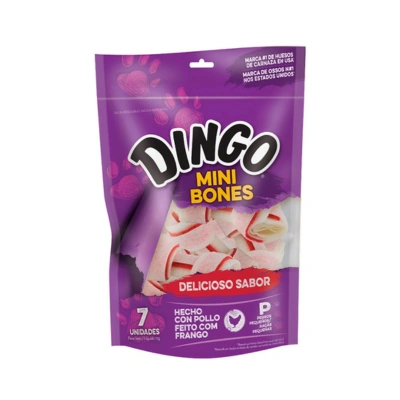

Osso Dingo para Cães Original Mini 100g

Preço: R$ 29,99
- Indicado para cães;
- Nada como um petisco tradicional para agradar seu melhor amigo;
- Produzido com ingredientes selecionados e de alta qualidade;
- Rico em proteína e 98% livre de gordura;
- Recheio de carne de frango verdadeira revestida com couro bovino natural;
- Disponível em embalagens de 100g e 250g.